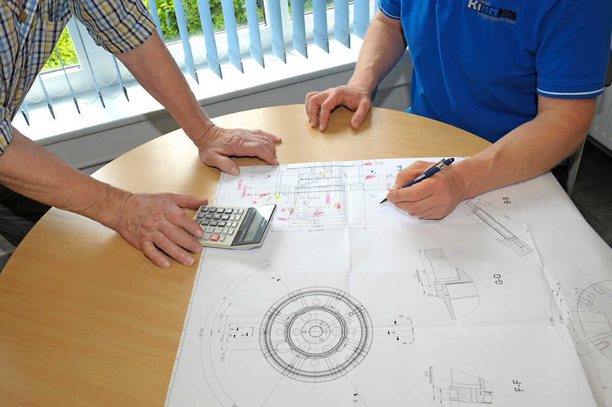

Vom Rohteil zum einbaufertigen Bauteil: Wir denken den gesamten Fertigungsablauf mit – Fräsen im Kern, ergänzt um Folgeprozesse mit erfahrenen Kooperationspartnern.
So entsteht Ihr Präzisionsteil – Schritt für Schritt, mit klarer Verantwortung in jeder Phase.
Die Hauptbearbeitung: komplexe Geometrien in einer Aufspannung auf unserer 5-Achs-Fräsmaschine – teilautomatisiert und prozesssicher.
Draht- und Senkerodieren für feinste Konturen, scharfe Innenecken und schwer zerspanbare, gehärtete Werkstoffe – dort, wo Fräsen an Grenzen stößt.
Beschichten, Schleifen und Veredeln – abgestimmt auf Verschleiß, Korrosionsschutz und Optik. Ausgeführt mit spezialisierten Kooperationspartnern.
Härten und Vergüten für die geforderten mechanischen Eigenschaften – mit kontrollierten Prozessen bei unseren Partnerbetrieben.
Maßkontrolle und Sichtprüfung vor der Auslieferung – damit Ihr Bauteil einbaufertig und dokumentiert bei Ihnen ankommt.
Nicht jeden Prozessschritt führen wir im eigenen Haus aus – und das aus gutem Grund: Für Oberflächen- und Wärmebehandlung arbeiten wir mit erfahrenen Spezialbetrieben zusammen. So erhalten Sie in jedem Schritt Fachkompetenz auf höchstem Niveau – koordiniert aus einer Hand.

Enge Toleranzen dank 5-Achs-Bearbeitung in einer Aufspannung.
Teilautomatisierte Prozesse für gleichbleibende Ergebnisse.
Klare Prozesse und Prüfung vor der Auslieferung.
Von der Zerspanung bis zur Wärmebehandlung – sprechen Sie uns auf Ihren Prozess an.
Prozess besprechen